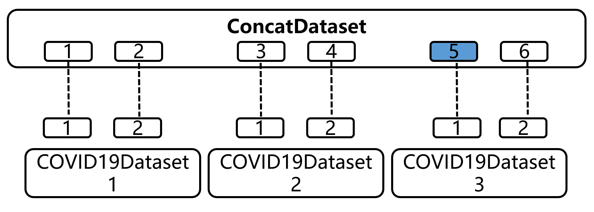

3.3 系列api
前言：2022-1月至4月完全没有更新，这三个月发生的事情太多了，国际上有俄乌，国内有上海，公司里有xxx项目，不管怎么样，过去的终将过去，继续学习PyTorch吧，加油！
前几个小节已经把pytorch的数据读取、加载、预处理机制和逻辑关系理清楚了，下面讲一下实用的API，包括数据集的拼接、截取、划分，以及十分重要的采样策略——sampler。
concat
在实际项目中，数据的来源往往是多源的，可能是多个中心收集的，也可能是多个时间段收集，很难将可用数据统一到一个数据形式。通常有两种做法，一种是固定一个数据形式，所有获取到的数据经过整理，变为统一格式，然后用一个Dataset即可读取。还有一种更为灵活的方式是为每批数据编写一个Dataset，然后使用torch.utils.data.ConcatDataset类将他们拼接起来，这种方法可以灵活的处理多源数据，也可以很好的使用别人的数据及Dataset。
下面还是来看COVID-19的例子，大家知道想要获取大量的COVID-19数据，肯定是多源的，不同国家、不同机构、不同时间的X光片收集过来之后，如何把他们整理起来供模型训练呢？先看这个github仓库covid-chestxray-dataset，他们是这样做的，将采集到的数据统一整理，并生成metadata（元信息），但有的时候有现成的Dataset之后，我们可通过拼接的方法将所有数据拼接成一个大的dataset进行使用。
请结合代码阅读，在2.2与3.2中分别实现了COVID19Dataset、COVID19Dataset2、COVID19Dataset3，假设在项目开始时拿到了COVID19Dataset，做了一段时间来了新数据2和3，那么像把他们放到一起充当训练集，可以用concat完成。可以看到代码将3个数据集拼接得到总的数据集，数据量为2+2+2=6。这里的concatdataset其实还是一个dataset类，它内部还是有len和getitem，里面的getitem代码思路值得学习。concatdataset通过给数据集编号、所有样本编号，然后在__getitem函数中将dataloader传进来的整体样本序号进行计算，得到匹配的数据集序号，以及在该数据集内的样本编号。
可能有点绕，请看图：假设dataloader想要第5个样本，传入index=4， 这时getitem会计算第五个样本在第三个数据集的第1个位置。然后通过self.datasets[datasetidx][sampleidx]来获取数据。这样对外进行一层封装，内部实现仍旧调用各个dataset的__getitem，这样是不是很巧妙呢？

def __getitem__(self, idx):
if idx < 0:
if -idx > len(self):
raise ValueError("absolute value of index should not exceed dataset length")
idx = len(self) + idx
dataset_idx = bisect.bisect_right(self.cumulative_sizes, idx)
if dataset_idx == 0:
sample_idx = idx
else:
sample_idx = idx - self.cumulative_sizes[dataset_idx - 1]
return self.datasets[dataset_idx][sample_idx]
Subset
subset可根据指定的索引获取子数据集，Subset也是Dataset类，同样包含_len_和__getitem\，其代码编写风格也可以学习一下.
CLASStorch.utils.data.Subset(dataset, indices)[SOURCE]
Subset of a dataset at specified indices.
Parameters
- dataset (Dataset) – The whole Dataset
- indices (sequence) – Indices in the whole set selected for subset
def __init__(self, dataset: Dataset[T_co], indices: Sequence[int]) -> None:
self.dataset = dataset
self.indices = indices
def __getitem__(self, idx):
if isinstance(idx, list):
return self.dataset[[self.indices[i] for i in idx]]
return self.dataset[self.indices[idx]]
def __len__(self):
return len(self.indices)
使用上非常简单，代码看一眼就明白， 这里不再赘述
random_split
该函数的功能是随机的将dataset划分为多个不重叠的子集，适合用来划分训练、验证集（不过不建议通过它进行，因为对用户而言，其划分不可见，不利于分析）。
使用也非常简单，只需要设置每个子集的数据量，传给lengths即可。
torch.utils.data.random_split(dataset, lengths, generator=)[SOURCE]
Randomly split a dataset into non-overlapping new datasets of given lengths. Optionally fix the generator for reproducible results, e.g.:
Parameters
- dataset (Dataset) – Dataset to be split
- lengths (sequence) – lengths of splits to be produced
- generator (Generator) – Generator used for the random permutation
---------------------------------------------------------------------- 分割线 ------------------------------------------------------------------
sampler
下面进入另外一个主题——sampler， sampler是在dataloader中起到挑选数据的功能，主要是设置挑选策略，如按顺序挑选、随机挑选、按类别分概率挑选等等，这些都可以通过自定义sampler实现。
在上一节我们已经用过了一个sampler，那就是batch_sampler，我们先学习一下它的用法，然后再去了解 RandomSampler， SequentialSampler， 以及SubsetRandomSampler和WeightedRandomSampler。
sampler的概念比较复杂，建议大家将BatchSampler、RandomSampler和SequentialSampler放在一起学习。
sampler 与 batch_sampler
首先讲一下dataloader类的sampler变量与batch_sampler变量的区别，在dataloader里会有这两个变量，第一次碰到时候很懵，怎么还有两个采样器，dataloader到底用的哪一个？还是两个都用？经过一番调试，终于搞清楚了。
本质上它们两个都是采样器，当采用auto_collation时，采用batch_sampler。依据如下：dataloader.py 365行
@property
def _index_sampler(self):
if self._auto_collation:
return self.batch_sampler
else:
return self.sampler
来看一下两者定义：
- sampler (Sampler or Iterable, optional) – defines the strategy to draw samples from the dataset. Can be any Iterable with len implemented. If specified, shuffle must not be specified.
- batch_sampler (Sampler or Iterable, optional) – like sampler, but returns a batch of indices at a time. Mutually exclusive with batch_size, shuffle, sampler, and drop_last.
从定义可知道batch_sampler是一次返回一个batch的索引。通常我们用的都是batch_sampler，其对应的是BatchSampler类。
BatchSampler
下面先学习BatchSampler类。回顾3.3的dataloader获取一个样本的机制，会在一个self.nextindex()中调用实际的sampler迭代器，继续进入会来到BatchSampler类的__iter函数，dataloader初始化的时候根据参数配置，自动设置了采样策略为BatchSampler， 依据如下：dataloader.py 第272行代码
if batch_size is not None and batch_sampler is None:
# auto_collation without custom batch_sampler
batch_sampler = BatchSampler(sampler, batch_size, drop_last)
dataloader.py 365行
@property
def _index_sampler(self):
if self._auto_collation:
return self.batch_sampler
else:
return self.sampler
定位到了BatchSampler，下面来看看类的定义以及传进去的参数是什么。
torch.utils.data.BatchSampler(sampler, batch_size, drop_last)
后两个参数好理解，第一个参数传入的是一个sampler采样器，在这里会有两种情况，如果需要shuffle，则传入RandomSampler，不需要打乱，则传入SequentialSampler。
依据如下, dataloader.py 267行。
if shuffle:
sampler = RandomSampler(dataset, generator=generator)
else:
sampler = SequentialSampler(dataset)
到这里，BatchSampler、RandomSampler和SequentialSampler三者之间的关系逐渐清晰.
BatchSampler是在其它两者之上封装了一个批抽取的功能，一次yield一个batch的index，而样本采样的顺序取决于RandomSampler和SequentialSample。
来学习一下BatchSampler如何产生一个batch的序号，并且支持drop_last的功能。
def __iter__(self) -> Iterator[List[int]]:
batch = []
for idx in self.sampler:
batch.append(idx)
if len(batch) == self.batch_size:
yield batch
batch = []
# 当for循环结束，且batch的数量又不满足batchsize时，则进入以下代码
# 其实就是drop_last的逻辑代码
if len(batch) > 0 and not self.drop_last:
yield batch
理解了三者的关系（BatchSampler、RandomSampler和SequentialSampler），RandomSampler和SequentialSampler就很容易理解，来看它们的核心iter函数，学习一下如何编写顺序迭代器以及随机迭代器。
SequentialSampler
顺序迭代器没啥好说的，得到一个按顺序的迭代器。这个顺序就来自 range()函数。
def __iter__(self) -> Iterator[int]:
return iter(range(len(self.data_source)))
RandomSampler
RandomSampler的iter函数核心在于设置一个随机策略，随机策略委托给generator实现，在使用的时候非常简单，默认情况下会使用这行代码实现：yield from torch.randperm(n, generator=generator).tolist()， 利用torch的随机方法生成一个随机整数序列，对于generator默认采用的是随机一个随机种子进行设置。更多的随机概念可以自行了解torch.Generator()、torch.randperm()。
def __iter__(self) -> Iterator[int]:
n = len(self.data_source)
if self.generator is None:
seed = int(torch.empty((), dtype=torch.int64).random_().item())
generator = torch.Generator()
generator.manual_seed(seed)
else:
generator = self.generator
if self.replacement:
for _ in range(self.num_samples // 32):
yield from torch.randint(high=n, size=(32,), dtype=torch.int64, generator=generator).tolist()
yield from torch.randint(high=n, size=(self.num_samples % 32,), dtype=torch.int64, generator=generator).tolist()
else:
yield from torch.randperm(n, generator=generator).tolist()
下面学习另外两个实用的采样器：SubsetRandomSampler和WeightedRandomSampler。
SubsetRandomSampler
顾名思义，可以通过索引定义一个子集的随机采样器，直接看代码
```
def iter(self) -> Iterator[int]:
for i in torch.randperm(len(self.indices), generator=self.generator):
yield self.indices[i]
从代码可知道，这个采样器返回的样本总数是传入的索引的长度，这里体现了subset，而随机则是每次会随机的从子集里挑选1个数据返回。
---------------------------------------------------------------------- 分割线 ------------------------------------------------------------------
WeightedRandomSampler
不知大家是否自行处理过数据均衡采样？最简单粗暴的方法是否是把数据少的样本复制n份，直到所有类别样本数量一致，这是一种“笨”办法，其实可以通过采样器进行加权的采样，下面来看看WeightedRandomSampler。
先来看它的原型：
torch.utils.data.WeightedRandomSampler(weights, num_samples, replacement=True, generator=None)
Samples elements from [0,..,len(weights)-1] with given probabilities (weights).
- weights (sequence) – 每个样本的采样权重，权重之和不必为1，只需要关心各样本之间的比例即可。
- num_samples (int) – 采样数量，一般设为样本总量。
- replacement (bool) –是否有放回采样。 True，表示有放回。
- generator (Generator) – 自定义生成器，通常用默认的。
在pytorch的机制里，sampler为每个sample设置权重，因此在设置的时候不仅要指定每个类的采样概率，还要把各类采样概率分发到每个样本上，再传给WeightedRandomSampler。这个机制与常识有一点点不一样，直观的理解应该是为每个类别设置采样概率就好，但这却是为每个样本设置权重，因此需要额外操作两行代码。
下面通过两个案例学习如何使用WeightedRandomSampler。
案例1： sampler初认识
# 第一步：计算每个类的采样概率
weights = torch.tensor([1, 5], dtype=torch.float)
# 第二步：生成每个样本的采样概率
train_targets = [sample[1] for sample in train_data.img_info]
samples_weights = weights[train_targets]
# 第三步：实例化WeightedRandomSampler
sampler_w = WeightedRandomSampler(
weights=samples_weights,
num_samples=len(samples_weights),
replacement=True)
sampler的构建分三步：
计算各类的采样概率：这里手动设置，是为了让大家可以调整不同的比率，观察dataloader采出样本的变化。下一个例子中采用样本数量进行计算，来达到均衡采样。
生成每个样本的概率：从pytorch机制了解到，需要为每个样本设置采样概率，这里采用的方法是按类别分发即可。在这里有一点需要注意，就是样本标签的顺序需要与dataset中的getitem中的索引顺序保持一致！由于这里采用了dataset.img_info来维护这个顺序，因此可以轻松获得样本顺序。
实例化WeightedRandomSampler
通过运行配套代码可以看到
>
torch.Size([2]) tensor([1, 1])
torch.Size([2]) tensor([1, 1])
torch.Size([2]) tensor([1, 1])
torch.Size([2]) tensor([1, 1])
torch.Size([2]) tensor([1, 0])
torch.Size([2]) tensor([1, 1])
torch.Size([2]) tensor([1, 1])
torch.Size([2]) tensor([1, 1])
torch.Size([2]) tensor([1, 1])
torch.Size([2]) tensor([1, 1])
这里发现出现了很多次[1, 1]。这是因为有放回采样，并且样本1的采样概率比0高很多。
通过这个例子，希望大家能了解
- WeightedRandomSampler的使用流程
- WeightedRandomSampler采样机制可以为有放回的
- 有的样本在整个loader中可能不会选中
案例2：不均衡数据集进行均衡采样
下面利用WeightedRandomSampler实现一个10类别的不均衡数据集采样，使它变为1:1的采样。
下面制作了一个虚拟的不均衡数据集，每个类别数量分别是 10， 20，..., 100。总共550张样本，下面希望通过WeightedRandomSampler实现一个dataloader，每次采样550张样本，各类别的数量大约为55。
代码的核心在于统计各类样本的数量，可仔细阅读
# 第一步：计算各类别的采样权重
# 计算每个类的样本数量
train_targets = [sample[1] for sample in train_data.img_info]
label_counter = collections.Counter(train_targets)
class_sample_counts = [label_counter[k] for k in sorted(label_counter)] # 需要特别注意，此list的顺序！
# 计算权重，利用倒数即可
weights = 1. / torch.tensor(class_sample_counts, dtype=torch.float)
最后可以看到每个epoch采样到的数据几乎实现1:1，可以很好的实现按照设置的权重比例采样。
>
Counter({9: 100, 8: 90, 7: 80, 6: 70, 5: 60, 4: 50, 3: 40, 2: 30, 1: 20, 0: 10})
Counter({9: 100, 8: 90, 7: 80, 6: 70, 5: 60, 4: 50, 3: 40, 2: 30, 1: 20, 0: 10})
Counter({9: 100, 8: 90, 7: 80, 6: 70, 5: 60, 4: 50, 3: 40, 2: 30, 1: 20, 0: 10})
Counter({9: 100, 8: 90, 7: 80, 6: 70, 5: 60, 4: 50, 3: 40, 2: 30, 1: 20, 0: 10})
Counter({9: 100, 8: 90, 7: 80, 6: 70, 5: 60, 4: 50, 3: 40, 2: 30, 1: 20, 0: 10})
Counter({9: 100, 8: 90, 7: 80, 6: 70, 5: 60, 4: 50, 3: 40, 2: 30, 1: 20, 0: 10})
Counter({9: 100, 8: 90, 7: 80, 6: 70, 5: 60, 4: 50, 3: 40, 2: 30, 1: 20, 0: 10})
Counter({9: 100, 8: 90, 7: 80, 6: 70, 5: 60, 4: 50, 3: 40, 2: 30, 1: 20, 0: 10})
Counter({9: 100, 8: 90, 7: 80, 6: 70, 5: 60, 4: 50, 3: 40, 2: 30, 1: 20, 0: 10})
Counter({9: 100, 8: 90, 7: 80, 6: 70, 5: 60, 4: 50, 3: 40, 2: 30, 1: 20, 0: 10})
接下来运用sampler
Counter({0: 62, 4: 62, 8: 61, 9: 58, 6: 57, 3: 54, 1: 51, 7: 50, 5: 48, 2: 47})
Counter({5: 72, 7: 59, 6: 59, 8: 57, 1: 57, 0: 55, 4: 53, 2: 49, 9: 48, 3: 41})
Counter({0: 71, 3: 64, 5: 60, 9: 57, 4: 56, 2: 54, 1: 54, 6: 51, 8: 43, 7: 40})
Counter({4: 64, 7: 62, 3: 60, 8: 58, 1: 54, 5: 54, 0: 53, 6: 51, 2: 50, 9: 44})
Counter({8: 68, 0: 62, 7: 60, 6: 58, 2: 55, 3: 51, 9: 50, 5: 50, 1: 50, 4: 46})
Counter({5: 66, 4: 59, 9: 57, 0: 56, 1: 55, 3: 54, 7: 53, 2: 51, 8: 51, 6: 48})
Counter({3: 72, 9: 68, 5: 65, 6: 58, 4: 56, 8: 49, 1: 47, 2: 47, 0: 45, 7: 43})
Counter({4: 63, 2: 62, 7: 60, 9: 59, 3: 58, 8: 57, 6: 52, 0: 50, 5: 45, 1: 44})
Counter({8: 73, 3: 62, 6: 55, 0: 55, 2: 54, 4: 53, 7: 51, 1: 50, 9: 49, 5: 48})
Counter({5: 61, 3: 61, 2: 60, 9: 57, 1: 57, 7: 55, 6: 55, 4: 53, 8: 47, 0: 44})
进一步地，为了便于大家理解“weights (sequence) – a sequence of weights, not necessary summing up to one”这句话，在代码中增加了
> # weights = 12345. / torch.tensor(class_sample_counts, dtype=torch.float)
大家可以随机修改weight的尺度，观察采样结果
关于采样策略有很多的研究，也有现成的工具库可以使用，推荐大家看看这个repo
小结
本小结将常用的dataset、dataloader配套方法进行了讲解，包括数据集的拼接、子集挑选、子集划分和sampler。其中sampler是涨点神器，推荐掌握。在sampler中，先通过代码单步调试了解RandomSampler，然后顺藤摸瓜找到SequentialSampler和SubsetRandomSampler, 最后通过两个案例详细介绍涨点神器——WeightedRandomSampler的代码编写。
同时推荐大家拓展阅读关于数据采样策略对模型精度的论文，典型的主题是——长尾分布（Long Tail）
下一小节将介绍另外一个涨点首选神器——数据增强模块。先从torchvision的transform模块讲起，然后拓展到更强大的Albumentations